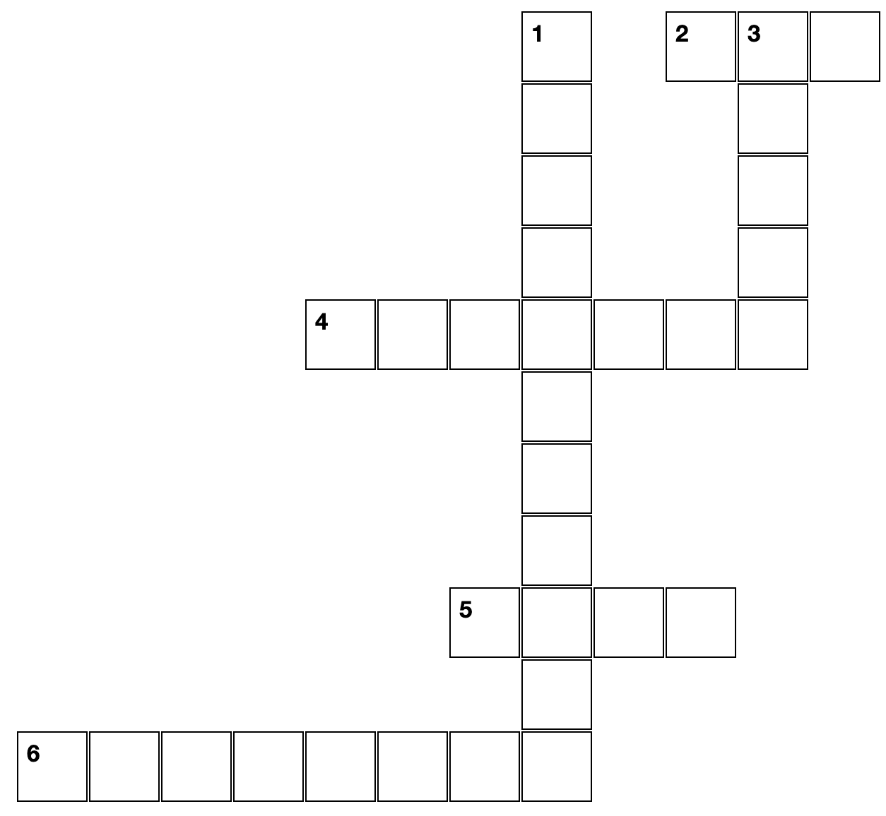
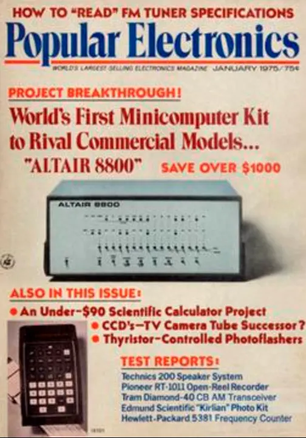
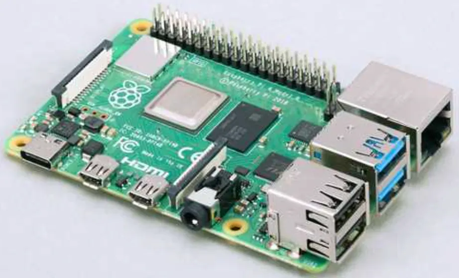
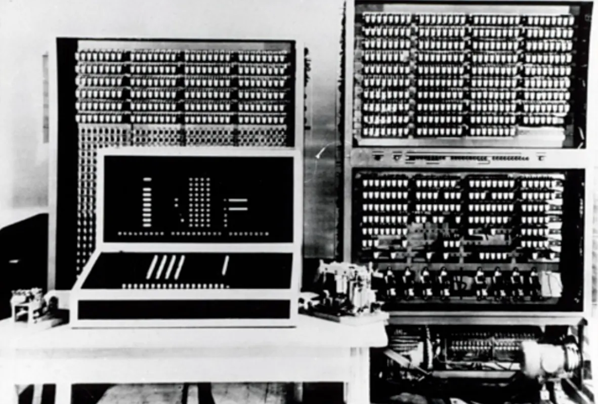
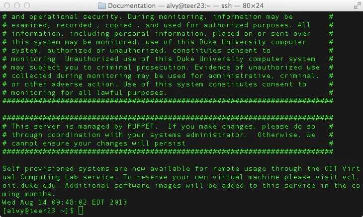

Guía 1001: Historia de la Informática¶
|
|

Exploración Estructuración Actividad práctica Transferencia
Temática: Historia de la Informática.
Objetivo de aprendizaje: Conocer los orígenes de la informática por medio del estudio de la evolución del internet, la computación personal y el software.
DESEMPEÑO: Demuestra entendimiento en la historia de la informática, reconociendo los eventos más importantes como la creación de internet (ARPANET), el desarrollo de la World Wide Web y los primeros navegadores. También comprende la evolución de las computadoras personales y los sistemas operativos más usados.
Componente: Naturaleza y evolución de la TI.
Competencia: Construyo conocimientos y saberes de base tecnológica e informática para la toma de decisiones en el desarrollo de productos tecnológicos.
Evidencia de aprendizaje: Sistematizo la evolución tecnológica e informática y la manera cómo incidieron en los cambios estructurales de la sociedad y la cultura a lo largo de la historia.
Actividades desarrolladas en su totalidad.
Participación en clase.
Explicación clara de conceptos.
Argumentación de ideas.
Cumplimiento de las reglas del aula.
Plan de refuerzo 01.pdf Descargar
Mensaje del autor¶
“En esta guía, el estudiante aprende sobre el origen de la computación personal para entender la evolución de nuestra propia cultura. Se invita a explorar cómo el desarrollo de Internet, junto con la evolución del hardware y el software, transformó la estructura de la sociedad actual. Al finalizar, el estudiante podrá sistematizar estos hitos históricos y reconocer la huella que la informática ha dejado en cada aspecto de nuestra vida cotidiana.”
—Camilo Fonseca
Historia de la Informática¶
Para conocer la historia de la Informática, es necesario conocer la historia del INTERNET, la computación personal y el software.
Historia del INTERNET (ARPANET)¶
[1] El Internet tiene sus orígenes en ARPANET, un proyecto militar desarrollado en 1969 por el Departamento de defensa de Estados Unidos. Esta red inicial conectaba un número reducido de computadoras en distintas universidades.
 ARPANET: Primera red del mundo¶ |
{kind=link}
En los años 70 y 80 (exactamente en el año 1983), se desarrollaron los protocolos TCP/IP, que permitieron la comunicación entre diferentes redes de computadoras.
[2] La década de los 90 marcó un punto de inflexión con la creación de la World Wide Web por Tim Berners-Lee, que introdujo las páginas web y los navegadores en 1989. A continuación se muestra la primera página web de la historia:

Primera página web: Word Wide Web¶ |
[3] Para facilitar el acceso a diferentes páginas web, en 1993 se creo el navegador web MOSAIC. Previamente existía otro navegador de nombre Nexus pero MOSAIC fue el primer navegador en usarse de forma masiva.

MOSAIC: Primer navegador web en usarse de forma masiva.¶ |
[4] El Internet moderno ha evolucionado considerablemente desde entonces, pasando por la era de la Web 2.0 (redes sociales e interactividad las cuales tienen su origen en el año 2004), hasta la actual era del Internet móvil cuyo origen fue en el año 2007. Hoy en día la nube y el Internet de las Cosas (IoT) conectan a miles de millones de dispositivos y usuarios en todo el mundo.
Historia de la COMPUTACIÓN PERSONAL¶
La historia de la computadora personal comienza en la década de 1970.
 REVISTA: Popular Electronics¶ |
{kind=link}
[5] En 1975, la Altair 8800 se convirtió en la primera computadora personal comercialmente exitosa, aunque requería ser ensamblada por el usuario. Esta computadora más adelante sería más fácil de programar por la creación de un lenguaje de programación llamado BASIC. Anteriormente se programaba con el lenguaje ENSAMBLADOR.
[6] En 1976, Apple Computer lanzó la Apple I, seguida en 1977 por la revolucionaria Apple II, una de las primeras computadoras con gráficos a color.
[7] Los años 80 vieron la llegada de la primera Macintosh, conocida como Macintosh 128K, fue presentada el 24 de enero de 1984 por Steve Jobs. Este ordenador personal marcó un hito en la historia de la computación por varias razones:
Interfaz Gráfica de Usuario (GUI): Fue uno de los primeros ordenadores en popularizar el uso de una interfaz gráfica, lo que facilitó su uso para personas no técnicas.
Ratón: Incluía un ratón, lo que era innovador en ese momento y permitía una interacción más intuitiva con el sistema.
Diseño Compacto: Su diseño era más pequeño y accesible en comparación con otros ordenadores de la época, lo que lo hacía ideal para el uso personal.
Software: Venía con aplicaciones básicas como MacPaint y MacWrite, que demostraban las capacidades gráficas y de procesamiento de texto del dispositivo.
Artículo: Descripción de la Macintosh¶ |
{kind=link}
La Macintosh 128K no solo fue un éxito comercial, sino que también sentó las bases para el desarrollo de futuras computadoras de Apple.
[8] En los años 90, Microsoft democratizaron el uso de las computadoras personales con el desarrollo de su sistema operativo Windows. El siglo XXI trajo las laptops ultradelgadas, tablets y mini-computadoras.
 PC: Raspberry Pi¶ |
{kind=link}
[9] En 2012, la Raspberry Pi revolucionó el concepto de computadora personal al ofrecer un dispositivo del tamaño de una tarjeta de crédito a bajo costo, enfocado en la educación y proyectos de programación.
Historia del SOFTWARE¶
El software tiene su origen en los primeros días de la computación. En la década de 1940, las primeras computadoras ejecutaban instrucciones básicas mediante cables e interruptores físicos.
 Primera computadora programable 1940¶ |
{kind=link}
[10] Los años 50 marcaron el inicio de los lenguajes de programación modernos, con la creación del lenguaje de alto nivel FORTRAN (1957).
[11] En el año 1969 se desarrolló el sistema operativo UNIX. La mayoría de sistemas operativos en la actualidad se basan en UNIX.
 Consola terminal UNIX¶ |
{kind=link}
Con la llegada de ALTAIR en 1975, Microsoft desarrolla el lenguaje de programación BASIC. Este permitió programar en dicha computadora.
[12] La década de 1980 fue revolucionaria con la llegada del software comercial para PC, incluyendo procesadores de texto, hojas de cálculo y los primeros sistemas operativos con interfaz gráfica. Esto inicio el año 1981 con la creación del primer sistema operativo de Microsoft: MS-DOS.
Logo MSDOS¶ |
{kind=link}
[11] En el año 1991 una comunidad de ingenieros y desarrolladores a nivel mundial crean el sistema operativo LINUX. El cual es de gran importancia hasta nuestros días.
Logo LINUX¶ |
{kind=link}
En la actualidad, el software ha evolucionado hacia aplicaciones en la nube, inteligencia artificial y desarrollo ágil, transformando completamente la manera en la que interactuamos con la tecnología.
A00: Introducción (5%)¶
Exploración
Transcriba en su cuaderno el objetivo, las orientaciones curriculares y los criterios de evaluación de la presente guía.
Lea el mensaje del autor y en su cuaderno responda:
¿Por qué es importante estudiar la historia de la informática?
A01: Taller (15%)¶
Estructuración
En su cuaderno, responda las siguientes preguntas:
¿Cómo se llamó la primera red?
¿En que año y en que lugar se creó la primera red?
¿Quienes crearon la tecnología para que funcionara el Internet?
¿En que año se creó la tecnología para que funcionara el Internet y que protocolos fueron usados en dicha tecnología?
En su cuaderno dibuje el mapa de la primera red y responda las siguientes preguntas:
¿Cuántos nodos en el occidente estaban interconectados?
¿Cuántos nodos en el oriente estaban interconectados?
Responda la siguiente pregunta en su cuaderno:
¿En que año se crea el primer navegador y la primera página web?
Traduzca los contenidos de la primera página web y haga un breve resumen de dichos contenidos en su cuaderno.
En su cuaderno dibuje un boceto de la interfaz gráfica del primer navegador web MOSAIC y realice una breve descripción de las diferencias de este primer navegador con navegadores actuales como GOOGLE CHROME, MOZILLA FIREFOX o MICROSOFT EDGE.
En su cuaderno responda las siguientes preguntas:
¿Cuál fue la primera computadora personal de la historia y en que año se creó?
¿Qué lenguajes de programación se usaron en la primera computadora personal?
¿Cómo APPLE se relaciona con la historia de la computadora personal?
¿Quién fue Steve Jobs?
¿Cómo se democratizó el uso de las computadoras personales?
En su cuaderno responda:
¿Qué características tenía la primera Macintosh y en que año fue creada?
En su cuaderno dibuje un bosquejo de la primera Macintosh.
Observe el artículo donde se describe la Macintosh y en su cuaderno describa el significado de las siguientes frases:
“La primera APPLE que se puede llevar en un bolso”
“Si puedes señalar, puedes usar Macintosh”
“PERSONALIDAD DE MACINTOSH: Lado divertido, Lado serio”
“Muy pronto habrán dos tipos de personas: Aquellos que usan computadoras y aquellos que usan APPLES”
En su cuaderno responda las siguientes preguntas:
¿En que año y como operaban las computadoras en sus orígenes?
¿Qué es y en que año se crea FORTRAN?
¿Por qué la década de los 80 fue revolucionaria en el software?
Investigue en INTERNET sobre el sistema operativo UNIX y luego en su cuaderno responda la siguiente pregunta:
¿Por qué UNIX es considerado el padre de la mayoría de sistemas operativos en la actualidad?
Investigue en INTERNET la diferencia entre un equipo cliente y un equipo servidor y luego realice una descripción en su cuaderno.
Investigue en INTERNET que es el sistema operativo LINUX luego realice una descripción en su cuaderno e indique por que se usa en la mayoría de servidores a nivel mundial.
En su cuaderno describa 10 distribuciones LINUX (con sus fechas de creación).
En su cuaderno responda:
¿En que año se creó el sistema operativo Microsoft DOS (MS-DOS) y por que fue tan importante?
Consulte en INTERNET sobre los siguientes sistemas operativos y en su cuaderno realice una descripción de cada uno con sus fechas de creación.
Windows 3.1
Windows 95
Windows 98
Windows 2000
Windows Me
Windows XP
Windows Vista
Windows 7
Windows 8
Windows 8.1
Windows 10
Windows 11
A02: Línea de tiempo (30%)¶
Actividad práctica
En medio pliego de cartulina, cree una línea de tiempo de la historia de la informática, desde los orígenes de la primera red con ARPANET hasta la creación de los sistemas operativos de Microsoft.
A03: Examen escrito (50%)¶
Transferencia
TIEMPO |
29 minutos |
PREGUNTAS |
10 |
OBJETIVO |
Comprobar conocimientos adquiridos. |
INSTRUCCIONES |
Cuadernos y celulares guardados. Solo se permite hoja, lápiz y borrador. |
Posibles preguntas
¿Qué es una red de datos y cuál fue la primera red a nivel mundial, (en que año y en que lugar se creó)?
¿Quién fue la persona que creo la tecnología para que funcionara el INTERNET?
¿En que año se creo la tecnología para que funcionara el INTERNET y que protocolos fueron usados en dicha tecnología?
¿En que año se crea el primer navegador y la primera página web?
Realice un descripción del navegador MOSAIC e indique sus diferencias con navegadores actuales
¿Qué es una computadora y que características debe tener para que sea considerada personal?
¿Cuál fue la primera computadora personal de la historia?
¿Qué lenguajes de programación se usaron en la primera computadora personal?
¿Cómo APPLE se relaciona con la historia de la computadora personal?
¿Cómo se democratizó el uso de las computadoras personales?
¿Qué características tenía la primera Macintosh y en que año fue creada?
¿En que año se creo el sistema operativo Microsoft DOS y por que fue tan importante?
Realice una descripción de tres sistemas operativos de Microsoft e indique por que se caracterizan
¿En que año y como operaban las computadoras en sus orígenes?
¿Qué es y en que año se crea FORTRAN?
¿Qué es un sistema operativo?
¿Por qué la década de los 80 fue revolucionaria en el software?
¿Qué es el sistema operativo LINUX y en que se diferencia con el sistema operativo UNIX?
Realice la descripción de tres distribuciones de sistema operativo tipo LINUX
¿En que se diferencian los sistemas operativos LINUX y Microsoft WINDOWS?